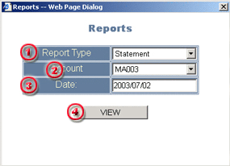
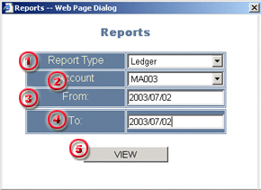

Reports
The
system provides two types of report:
User
may access the Reports dialog through selecting
Report from the Menu in the main screen:
STATEMENT
Statement is a daily report that contains all activities and margin status of a trading accounts in any particular trade day. The report mainly consists of :
User will activate the Report dialog through selection of Reports from the menu in the main screen in order to obtain the Statement report. In the Reports dialog, please provide information as needed
| 1 | Report Type - select Statement |

|
| 2 | Account - selection of trading account for the Statement Report | |
| 3 | Date - selection of the Trade Day of the report | |
| 4 | View - button to view the report as required |
When
all information required has been filled up, a press to the VIEW
button will return the report preview window.
In the report preview window, user may select to send the report to a
printer.
Ledger is a periodical report that contains all activities related with the balance of a trading accounts in a given period. However, the report does not provide any information for floating positions of the account.
User will activate the Report dialog through selection of Reports from the menu in the main screen in order to obtain the Ledger report. In the Reports dialog, please provide information as needed
| 1 | Report Type - select Ledger |

|
| 2 | Account - selection of trading account for the Report | |
| 3 | From - selection of report starting trade day | |
| 4 | To - selection of report ending trade day | |
| 5 | View - button to view the report as required |
When
all information required has been filled up, a press to the VIEW
button will return the report preview window.
In the report preview window, user may select to send the report to a
printer.